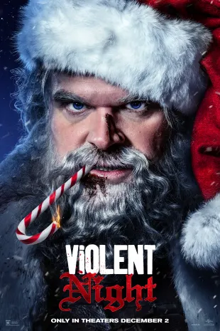
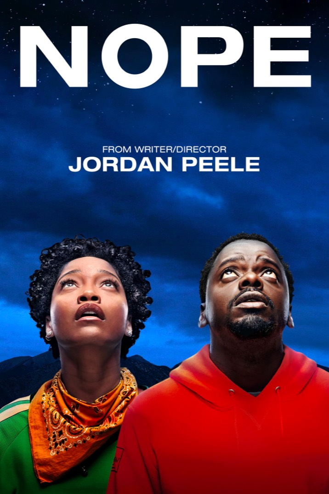
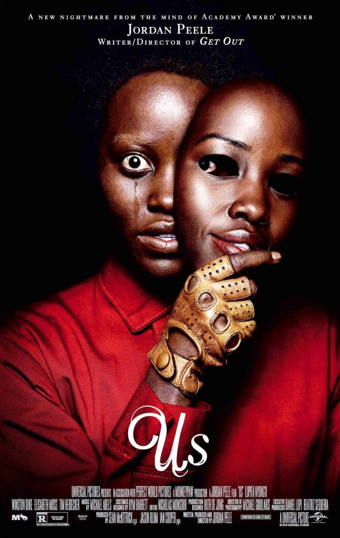
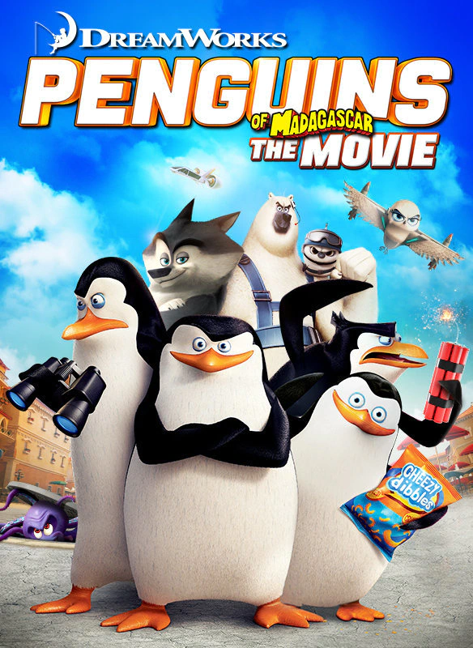

Дора и потереный город золота
Жанр: приключенческий
Описанее: приключенческий фильм режиссёра Джеймса Бобина, продолжение мультсериала «Даша-путешественница». Съёмки фильма начались 6 августа 2018 года в Квинсленде, Австралия и завершились в начале декабря того же года.

Жестокая ночь
Жанр: криминал, чёрный юмор
Описанее: Криминальная комедия, ужасы, триллер и боевик – так можно охарактеризовать фильм «Жестокая ночь». Норвежский режиссер Томми Виркола изобразил зимнюю сказку с особым усердием. На роль Санты пригласили звезду сериала «Очень странные дела» Дэвида Харбора.

Нет
Жанр: эпический, хоррор
Описанее: Фантастический фильм ужасов «Нет» является детищем Джордана Пила. Он имеет большой опыт работы в кино – присоединился к созданию более 60 фильмов и мультфильмов в качестве актера.

Мы
Жанр: хоррор
Опиманее: американский фильм ужасов режиссёра Джордана Пила. В США фильм вышел 22 марта 2019 года, в России — 28 марта 2019 года.

Пингвины Мадагаскара
Жанр: науч. фантастика приключенческий
Описанее: американский компьютерно-анимационный мультфильм студии DreamWorks Animation, спин-офф серии мультфильмов «Мадагаскар». Премьера в Ирландии состоялась 8 ноября 2014 года, в США — 26 ноября.

Data Loaded!.../
Имя: beronator331
Сообщение: «Один дома», пожалуй, самый атмосферный фильм за все время киноиндустрии, ставший уже новогодней традицией. Для меня он навсегда останется светлым воспоминанием детства. Его я пересматривала на одном дыхании неоднократно, и каждый раз интерес и эмоции переполняли меня, как в первый. Он идеально дополняет и без того прекрасную новогоднюю атмосферу. А при просмотре этого фильма всей семьей, праздничное настроение становится еще лучше. Да и вспоминать любимые моменты куда приятнее всем вместе.